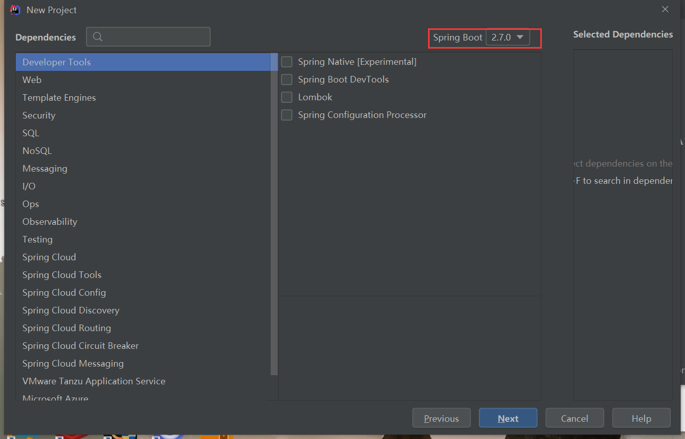

本人以前学过Spring，也写过相关业务代码。但是对Spring理解不深刻，故重新认识Spring
初始化Spring项目
我这里使用的是IDEA初始化Spring项目。
创建一个项目，并做如下设置，选择下一步。
配置新项目：
选择Spring Boot的版本和插件，选择下一步。

配置项目名称等。选择完成。
这里配置有问题也没关系，在pom.xml文件中做修改即可。
认识Spring项目
本项目上传到了GitHub：https://github.com/guoyujian/spring-in-action5-code
mvnw和mvnw.cmd
mvnw和mvnw.cmd是Maven包装器（wrapper）脚本。借助这些脚本，即便你的机器上没有安装Maven，也可以构建项目。
pom.xml
下面是我的pom.xml配置
<?xml version="1.0" encoding="UTF-8"?>
<project xmlns="http://maven.apache.org/POM/4.0.0" xmlns:xsi="http://www.w3.org/2001/XMLSchema-instance"
xsi:schemaLocation="http://maven.apache.org/POM/4.0.0 https://maven.apache.org/xsd/maven-4.0.0.xsd">
<modelVersion>4.0.0</modelVersion>
<parent>
<groupId>org.springframework.boot</groupId>
<artifactId>spring-boot-starter-parent</artifactId>
<version>2.0.4.RELEASE</version>
<relativePath/>
</parent>
<groupId>sia</groupId>
<packaging>jar</packaging>
<artifactId>taco-cloud</artifactId>
<version>0.0.1-SNAPSHOT</version>
<name>taco-cloud</name>
<description>Taco Cloud Example</description>
<properties>
<java.version>11</java.version>
</properties>
<dependencies>
<dependency>
<groupId>org.springframework.boot</groupId>
<artifactId>spring-boot-starter</artifactId>
</dependency>
<dependency>
<groupId>org.springframework.boot</groupId>
<artifactId>spring-boot-starter-test</artifactId>
<scope>test</scope>
</dependency>
<dependency>
<groupId>org.springframework.boot</groupId>
<artifactId>spring-boot-starter-web</artifactId>
</dependency>
<dependency>
<groupId>org.springframework.boot</groupId>
<artifactId>spring-boot-starter-thymeleaf</artifactId>
<scope>test</scope>
</dependency>
<dependency>
<groupId>junit</groupId>
<artifactId>junit</artifactId>
<version>4.12</version>
<scope>test</scope>
</dependency>
</dependencies>
<build>
<plugins>
<plugin>
<groupId>org.springframework.boot</groupId>
<artifactId>spring-boot-maven-plugin</artifactId>
</plugin>
</plugins>
</build>
</project>
|
注意几点：
- parent/version标签指定了所有Spring相关包的版本，这样我们就不用在下面的dependency中配置版本。
- packaging指出了打包方式，相比于war，jar更加流行。
- properties/java.version指定了运行的java版本
- dependencies标签下面全是依赖。其实一个最基本的项目是不需要这么多dependency的。可以自行注释掉这些dependency测试一下。
TacoCloudApplication
这是主类。代码如下：
@SpringBootApplication
public class TacoCloudApplication {
public static void main(String[] args) {
SpringApplication.run(TacoCloudApplication.class, args);
}
}
|
其中最重要的是@SpringBootApplication注解，这是一个组合注解，它组合了3个其他的注解：
- @SpringBootConfiguration：将该类声明为配置类。尽管这个类目前还没有太多的配置，但是后续我们可以按需添加基于Java的Spring框架配置。这个注解实际上是@Configuration注解的特殊形式。
- @EnableAutoConfiguration：启用Spring Boot的自动配置。我们随后会介绍自动配置的更多功能。就现在来说，我们只需要知道这个注解会告诉Spring Boot自动配置它认为我们会用到的组件。
- @ComponentScan：启用组件扫描。这样我们能够通过像@Component、@Controller、@Service这样的注解声明其他类，Spring会自动发现它们并将它们注册为Spring应用上下文中的组件。
TacoCloudApplicationTests
测试类。后面细讲。
resources/
该目录下，有
templates/：存放thymeleaf模板，由于现在前后端分离开发，thymeleaf是用来代替jsp的一个东西，所以这个文件夹和thymeleaf没那么重要。
static/：存放静态资源，图片，JS啥的，同上，不重要
application.properties：Spring的配置文件，可以是yml，重要
编写简单的Spring应用
MyController
在tacos包下面加入MyController，代码如下：
@Controller
public class MyController {
@GetMapping("/home")
public String home() {
return "home";
}
}
|
该类有一个@Controller注解所以Spring的组件扫描功能会自动发现它，并创建一个HomeController实例作为Spring应用上下文中的bean。实际上，有一些其他的注解与@Controller有着类似的目的（包括@Component、@Service和@Repository）。你可以为HomeController添加上述的任意其他注解，其作用是完全相同的。但是，在这里选择使用@Controller更能描述这个组件在应用中的角色。
home()是一个简单的控制器方法。它带有@GetMapping注解，表明如果针对/home发送HTTP GET请求，那么这个方法将会处理请求。
该方法所做的只是返回String类型的home值。这个值将会被解析为视图的逻辑名。视图如何实现取决于多个因素，但是因为Thymeleaf位于类路径中，所以我们可以使用Thymeleaf来定义模板。
模板名称是由逻辑视图名派生而来的，再加上“/templates/”前缀和“.html”后缀。最终形成的模板路径将是“/templates/home.html”。所以，我们需要将模板放到项目的“/src/main/resources/templates/home.html”目录中。
home.html
这块代码很简单：
<!DOCTYPE html>
<html lang="en">
<head>
<meta charset="UTF-8">
<title>Title</title>
</head>
<body>
hello!
</body>
</html>
|
编写测试类
在上面的TacoCloudApplicationTests测试类中编写代码：
import org.hamcrest.Matchers;
import org.junit.Test;
import org.junit.runner.RunWith;
import org.springframework.beans.factory.annotation.Autowired;
import org.springframework.boot.test.autoconfigure.web.servlet.WebMvcTest;
import org.springframework.boot.test.context.SpringBootTest;
import org.springframework.test.context.junit4.SpringRunner;
import org.springframework.test.web.servlet.MockMvc;
import org.springframework.test.web.servlet.RequestBuilder;
import org.springframework.test.web.servlet.request.MockMvcRequestBuilders;
import org.springframework.test.web.servlet.result.MockMvcResultMatchers;
@RunWith(SpringRunner.class)
@WebMvcTest(MyController.class)
public class TacoCloudApplicationTests {
@Autowired
private MockMvc mvc;
@Test
public void testHomePage() throws Exception {
mvc.perform(MockMvcRequestBuilders.get("/home"))
.andExpect(MockMvcResultMatchers.status().isOk())
.andExpect(MockMvcResultMatchers.view().name("home"))
.andExpect(MockMvcResultMatchers.content().string(Matchers.containsString("hello")));
}
}
|
注意这个类带有@RunWith(SpringRunner.class)注解。@RunWith是JUnit的注解，它会提供一个测试运行器（runner）来指导JUnit如何运行测试。可以将其想象为给JUnit应用一个插件，以提供自定义的测试行为。在本例中，为JUnit提供的是SpringRunner，这是一个Spring提供的测试运行器，它会创建测试运行所需的Spring应用上下文。
@WebMvcTest注解。这是Spring Boot所提供的一个特殊测试注解，它会让这个测试在Spring MVC应用的上下文中执行。更具体来讲，在本例中，它会将MyController注册到Spring MVC中，这样的话，我们就可以向它发送请求了。
测试类被注入了一个MockMvc，能够让测试实现mockup。通过testHomePage()方法，我们定义了针对主页想要执行的测试。它首先使用MockMvc对象对“/home”（根路径）发起HTTP GET请求。对于这个请求，我们设置了如下的预期（assert）：
- 响应应该具备HTTP 200 (OK)状态
- 视图的逻辑名称应该是home
- 渲染后的视图应该包含文本hello
注意，如果Spring版本为2.7.0，这里@Autowired会报错，目前还不知道为什么。
执行这个测试类，发现程序执行成功了。
总结
对本人来说，最大的收获就是如何编写测试类，对Spring应用进行快速测试。
参考资料
- 《Spring 实战（第五版）》